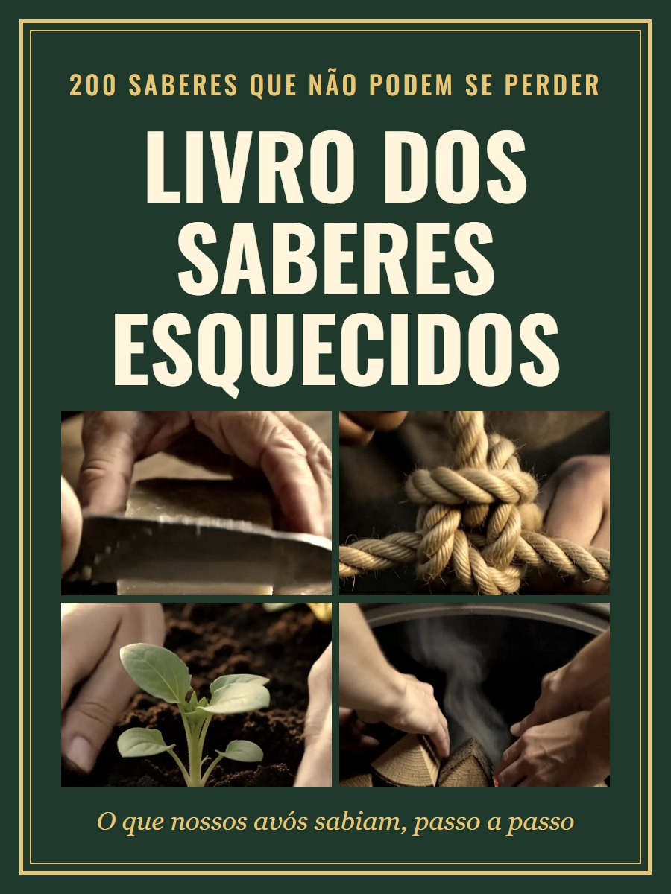
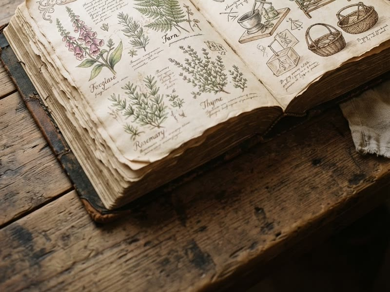
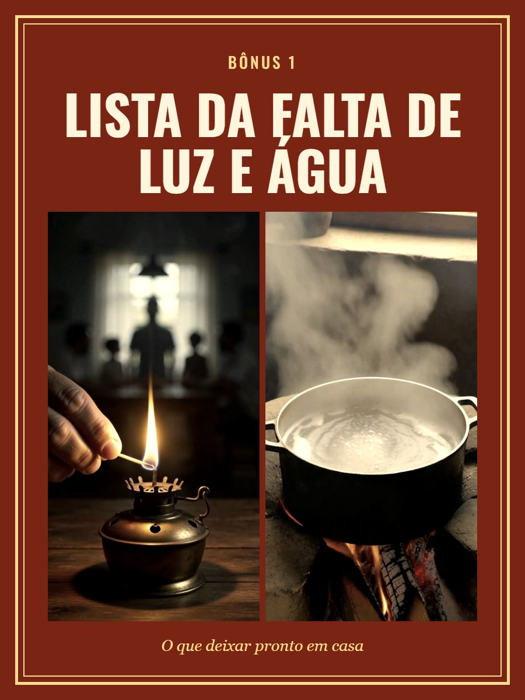
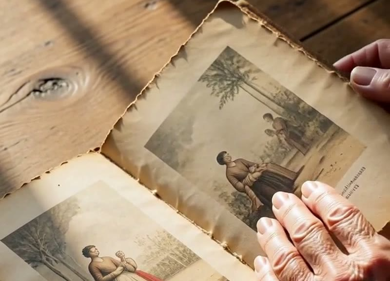
Esses são os 200 saberes que ninguém ensina mais: nem na escola, nem na TV, nem na internet.
Nossos avós faziam sabão, guardavam comida sem geladeira, consertavam quase tudo e se viravam sem luz. Aprendiam olhando, na beira do fogão e no quintal.
Quase ninguém escreveu nada disso.
E a nossa geração não sabe trocar uma torneira.
No dia em que faltar luz, água ou dinheiro, isso vai fazer muita falta. E quando eles se forem, esse conhecimento vai junto.
Foi para isso não acabar que este livro foi feito.
O Livro dos Saberes Esquecidos junta tudo em um lugar só, em linguagem de gente simples, para você entender de primeira, sem enrolação.
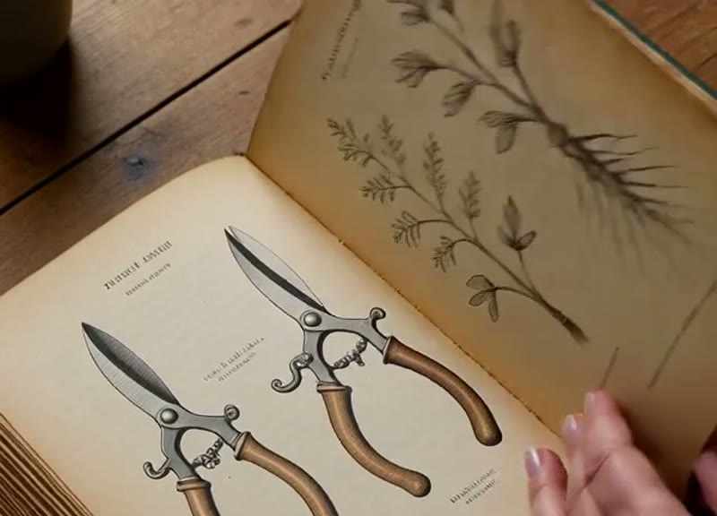
Não precisa ler tudo de uma vez. Faça um saber por dia, em poucos minutos, com o que você já tem em casa.
E é um presente de Natal daqueles que ninguém esquece: para o pai que gosta de consertar, para a avó que vai reconhecer cada receita, para o filho que nunca aprendeu.
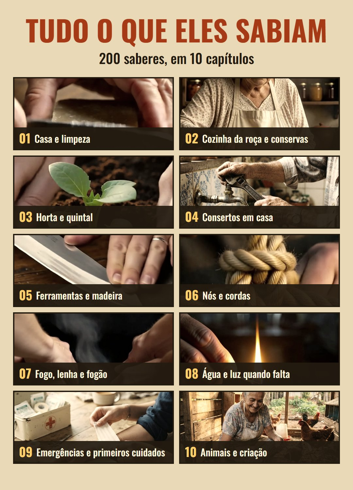
São 200 saberes organizados em 10 capítulos, para você achar na hora o que precisa.
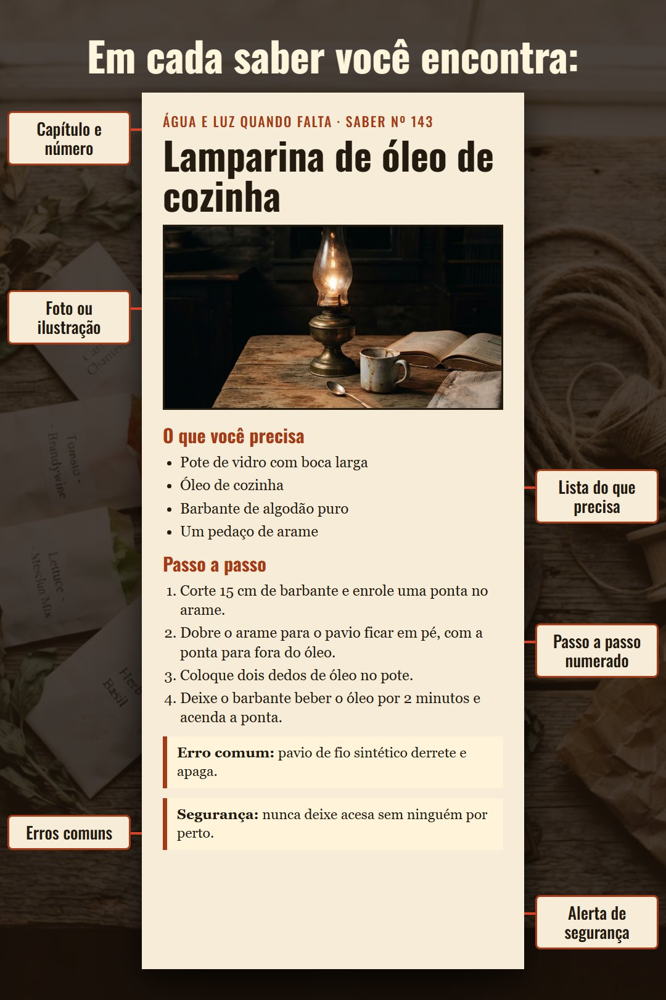
Para cada saber, você encontra a lista do que precisa e o passo a passo numerado, além dos erros mais comuns. O que oferece risco vem com alerta de segurança.
É um livro digital em PDF: leia no celular ou imprima as páginas que quiser.
Quero o livro agora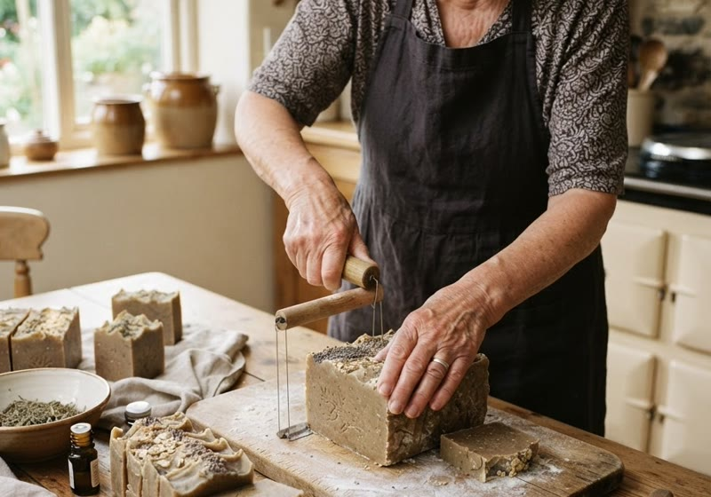
Tudo o que hoje vem em frasco de plástico, a sua avó fazia na beira do tanque, gastando centavos. Neste capítulo, a casa limpa volta a custar quase nada.
Alguns dos saberes deste capítulo:
* Sabão em barra da vovó – aquele que rende meses e custa pouco. Com todos os alertas de segurança para mexer com soda.
* Vinagre de limpeza – o líquido que substitui boa parte do seu armário de produtos.
* O truque do limão com sal – metal enferrujado volta a brilhar.
* Traça nunca mais – sem veneno e sem cheiro de produto.
* Pia entupida – como resolver antes de chamar alguém.
E mais 20 saberes neste capítulo.
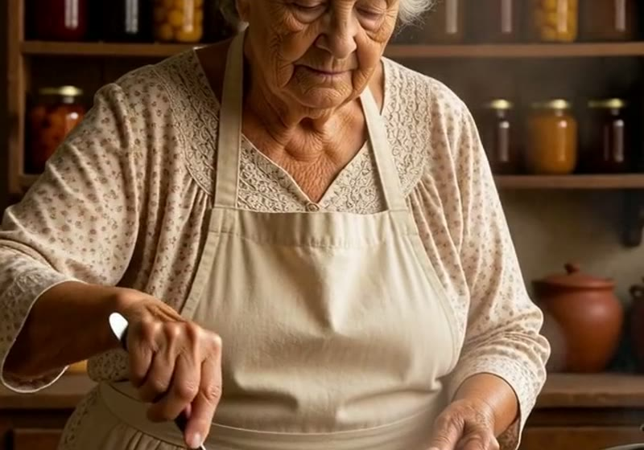
Antes da geladeira, ninguém perdia comida. Aqui você aprende como eles guardavam o que tinham, e como a comida rendia o ano inteiro.
Alguns dos saberes deste capítulo:
* Carne na banha – como guardavam carne antes da geladeira, com as regras de higiene que não podem faltar.
* Pão de fermento natural – só farinha, água e paciência.
* Conserva em vidro – com o passo de ferver o pote que quase todo mundo pula.
* Doce em compota – para a fruta da época durar meses.
* Fruta seca ao sol – sem máquina e sem conservante.
E mais 25 saberes neste capítulo.
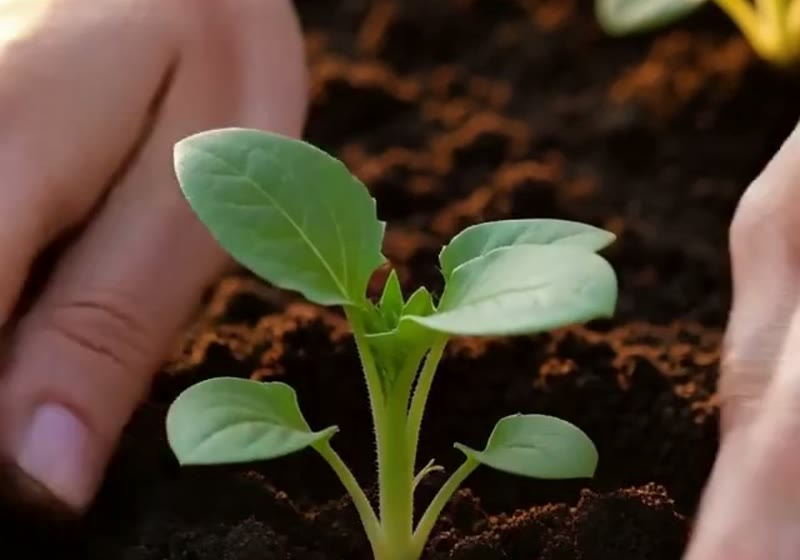
Mesmo com um cantinho de quintal, ou só uns vasos, dá para colher parte do que você compra no mercado.
Alguns dos saberes deste capítulo:
* Composteira de balde – o lixo da cozinha vira adubo.
* Muda de galho – uma planta vira dez, sem gastar nada.
* Guardar semente – de um ano para o outro, do jeito certo.
* Repelente de alho – pulgão longe, sem veneno.
* Horta em espaço pequeno – até em varanda de apartamento.
E mais 20 saberes neste capítulo.
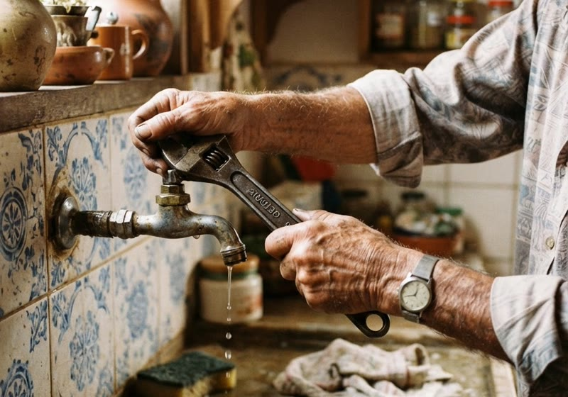
Cada visita de técnico custa caro. A maior parte dos problemas pequenos da casa se resolve com uma ferramenta simples e dez minutos.
Alguns dos saberes deste capítulo:
* Torneira pingando – o que trocar e como fazer sozinho.
* Porta que arrasta – sem precisar tirar a porta inteira.
* Vazamento no sifão – o conserto que se faz sem encanador.
* Buraco na parede – a massa simples que resolve.
* Tomada com defeito – sempre com o disjuntor desligado, passo a passo.
E mais 20 saberes neste capítulo.
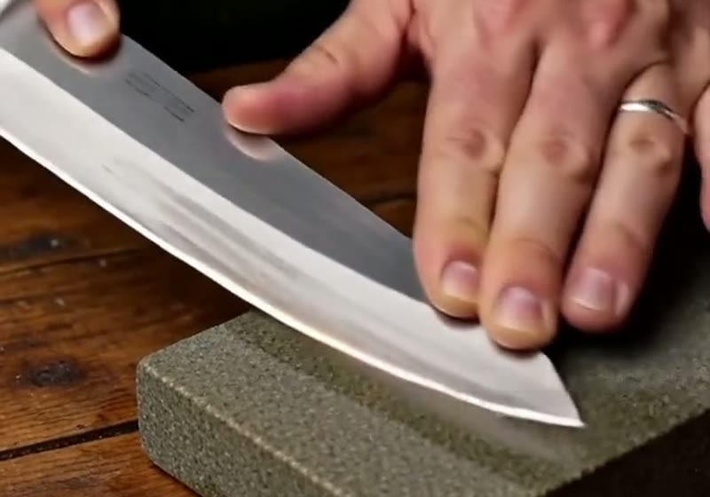
O avô tinha uma ferramenta para a vida inteira. Porque sabia cuidar dela.
Alguns dos saberes deste capítulo:
* Afiar faca na pedra – o fio que amolador de supermercado não dá.
* Cabo novo de enxada – em vez de comprar outra.
* Ferrugem fora – ferramenta velha de volta ao serviço.
* Encaixe sem prego – madeira que não solta.
E mais 11 saberes neste capítulo.
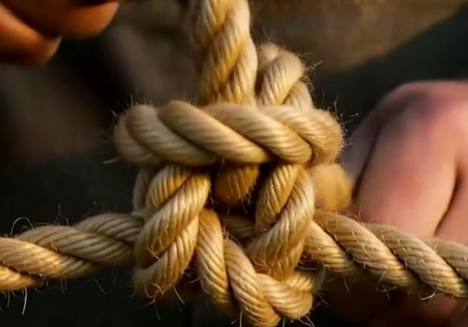
Quase ninguém mais sabe dar um nó que segura de verdade. E um dia isso faz falta.
Alguns dos saberes deste capítulo:
* Lais de guia – o rei dos nós: aguenta peso e desata fácil.
* Nó de caminhoneiro – aperta a carga como uma catraca.
* Nó de escota – para unir cordas de grossuras diferentes.
* Emenda de corda – corda rompida de volta ao uso.
E mais 11 saberes neste capítulo.
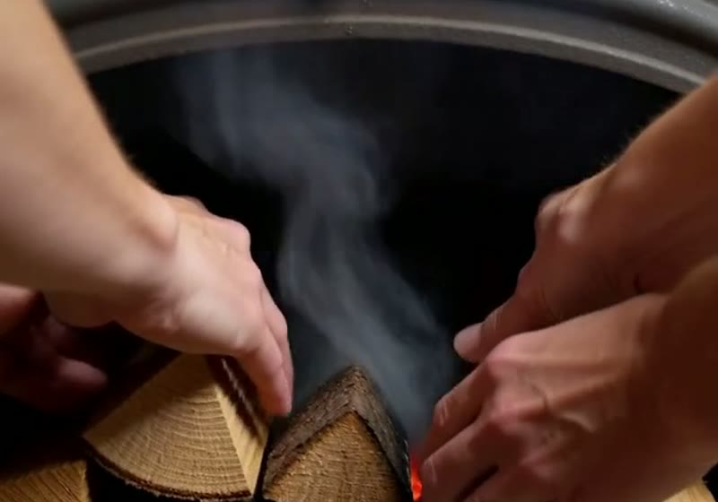
Sem gás, com chuva e com lenha ruim, eles cozinhavam do mesmo jeito.
Alguns dos saberes deste capítulo:
* Acender com lenha molhada – o jeito de fazer pegar mesmo assim.
* Fogão de tijolo – levanta em uma tarde.
* Guardar brasa – de um dia para o outro.
* Qual lenha usar – a que dura e a que só faz fumaça.
E mais 11 saberes neste capítulo.
Faltou luz. Faltou água. A maioria das casas não sabe o que fazer na primeira hora. Quem leu este capítulo sabe.
Alguns dos saberes deste capítulo:
* Água segura em 3 passos – coar, ferver e guardar do jeito certo.
* Lamparina de óleo de cozinha – luz com um pote de vidro e um barbante.
* Geladeira parada – o que ainda presta e o que precisa ir para o lixo.
* Água de chuva – como captar e guardar, e para o que ela serve.
E mais 16 saberes neste capítulo.
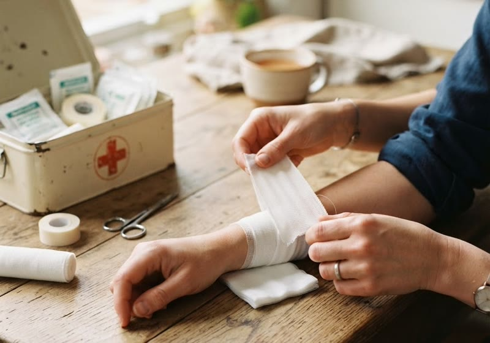
Nos primeiros minutos, saber o que não fazer é tão importante quanto saber o que fazer. Depois, procure atendimento médico.
Alguns dos saberes deste capítulo:
* Queimadura – o que fazer e o que nunca passar na pele.
* Engasgo – o passo a passo que pode fazer diferença.
* Picada de cobra – os erros que pioram tudo.
* O kit da casa – o que deixar pronto antes de precisar.
E mais 11 saberes neste capítulo.
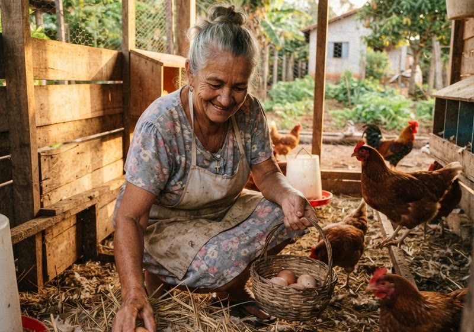
Meia dúzia de galinhas no quintal já muda a mesa da casa.
Alguns dos saberes deste capítulo:
* Galinheiro simples – com o que você tem por perto.
* Ninho certo – para a galinha botar no lugar.
* Rato longe – sem deixar veneno pela casa.
* Ração caseira – para gastar menos.
E mais 11 saberes neste capítulo.
Luz, água, gás ou dinheiro. Enquanto os outros ficam perdidos, você sabe por onde começar.
Menos técnico, menos produto, menos comida no lixo. Tudo isso volta para o seu bolso.
Fazer com as próprias mãos é a liberdade que os nossos avós tinham, e a gente perdeu.
Dinheiro acaba. O que você ensina aos seus filhos fica.
Quero o livro agoraO que deixar pronto em casa antes de precisar.
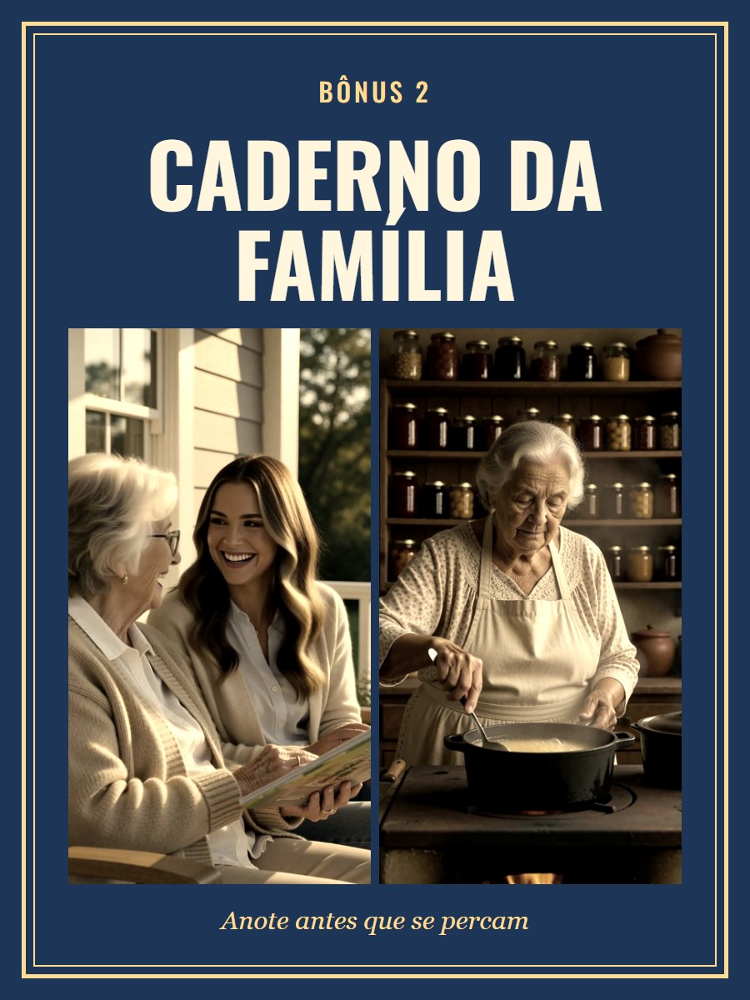
Para anotar os saberes dos seus avós antes que se percam.
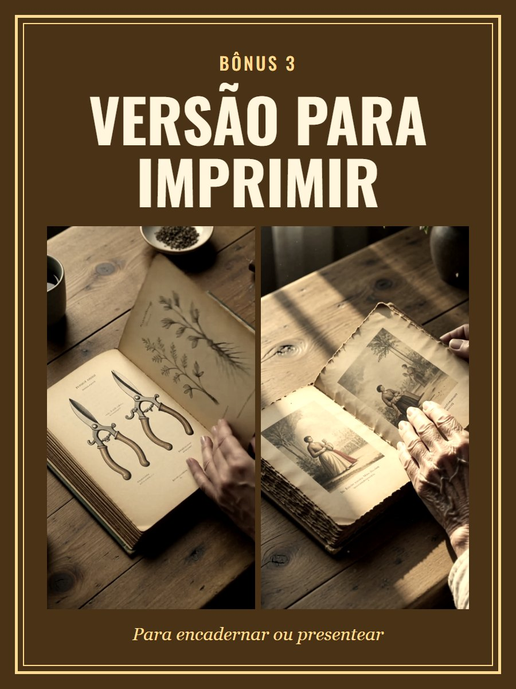
Para encadernar ou dar de presente.
Livro digital com 200 saberes + 3 presentes
R$ 37
Pagamento único. Menos de R$ 0,20 por saber.
Comprar agoraPix ou cartão. Acesso na hora, no seu e-mail.
Leia por 30 dias. Se achar que não valeu, devolvemos 100% do seu dinheiro. Sem pergunta e sem enrolação.
Se você acha que sempre vai ter aplicativo, entrega e luz, não compre.
Mas se você quer ser a pessoa que sabe o que fazer, é aqui que começa.
Quando eles se forem, isso vai junto.
Quero o livro por R$ 37Não. É um livro digital em PDF. Você lê no celular ou imprime as páginas que quiser.
O acesso chega no e-mail logo depois do pagamento.
Não. A maioria dos saberes é para fazer em casa, com o que você já tem.
O livro ensina primeiros cuidados, sem prometer cura. Em caso de doença, procure um médico.
Devolvemos tudo em até 30 dias.